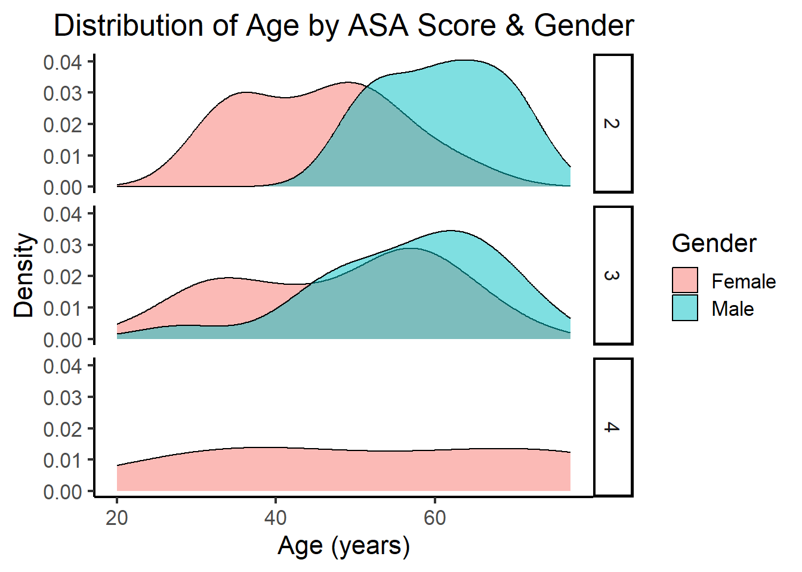

#required packages
install.packages("tidyverse")
install.packages("medicaldata")
install.packages("patchwork")
#additional packages
install.packages("ggthemes")Data Visualization with R
Data Visualization With ggplot2
The following document will give you some basics on data visualization using ggplot2. If you are completely new to R, here is a quick introduction on how to install R and RStudio, some basic functions, and the data format needed for best results with ggplot2.
Packages Used in This Presentation
The main packages I will use in this presentation are tidyverse (which includes ggplot2), medicaldata (which includes the data sets I will use for demonstration), and patchwork. I’m including additional packages I will show during the presentation; these are not required to succesfully use the code in this document.
First you need to install the packages as follows:
Then you need to load the packages:
#required packages
library(tidyverse)── Attaching core tidyverse packages ──────────────────────── tidyverse 2.0.0 ──
✔ dplyr 1.1.3 ✔ readr 2.1.4
✔ forcats 1.0.0 ✔ stringr 1.5.0
✔ ggplot2 3.4.4 ✔ tibble 3.2.1
✔ lubridate 1.9.3 ✔ tidyr 1.3.0
✔ purrr 1.0.2
── Conflicts ────────────────────────────────────────── tidyverse_conflicts() ──
✖ dplyr::filter() masks stats::filter()
✖ dplyr::lag() masks stats::lag()
ℹ Use the conflicted package (<http://conflicted.r-lib.org/>) to force all conflicts to become errorslibrary(medicaldata)
library(patchwork)
#additional packages
library(ggthemes)Load Data
Next we need to load the data we will be working with. R has many built-in data sets for practice and teaching, which you can explore by typing data() into your console. I decided to use data from the medicaldata package, since that will be similar to the type of data you might be working with. To load built-in data sets, you just include the data set name in the parentheses behind the data() function. We will start with the “laryngoscope” data.
data("laryngoscope")This data set comes from an RCT that included 99 adult patients who needed orotracheal intubation. The purpose of the study was to compare a novel video laryngoscope (Pentax AWS) with the standard of care laryngoscope (Macintosh). A more thorough introduction to the study can be found here (data dictionary here).
Explore Data
A good first step is to look at the properties of the data set. The str() function will give us the structure of the data set including:
The “class” of the object we’re exploring (in this case a data frame)
Number of observations
Number of variables
Variable names
Variable type (in this case “num” for numeric)
The first few observations
str(laryngoscope)'data.frame': 99 obs. of 22 variables:
$ age : num 51 52 37 20 35 39 52 59 32 24 ...
$ gender : num 0 0 0 0 0 0 0 0 0 0 ...
$ asa : num 3 3 3 3 3 3 3 3 3 3 ...
$ BMI : num 56.2 44.6 41.6 46.3 61 ...
$ Mallampati : num 1 2 1 2 2 2 2 2 1 1 ...
$ Randomization : num 0 0 0 0 0 0 0 0 0 0 ...
$ attempt1_time : num 29 29 31 31 21 10 13 23 15 8.96 ...
$ attempt1_S_F : num 1 1 0 0 1 1 1 1 1 1 ...
$ attempt2_time : num NA NA 60 46 NA NA NA NA NA NA ...
$ attempt2_assigned_method: num NA NA 1 1 NA NA NA NA NA NA ...
$ attempt2_S_F : num NA NA 1 1 NA NA NA NA NA NA ...
$ attempt3_time : num NA NA NA NA NA NA NA NA NA NA ...
$ attempt3_assigned_method: num NA NA NA NA NA NA NA NA NA NA ...
$ attempt3_S_F : num NA NA NA NA NA NA NA NA NA NA ...
$ attempts : num 1 1 2 2 1 1 1 1 1 1 ...
$ failures : num 0 0 1 1 0 0 0 0 0 0 ...
$ total_intubation_time : num 29 29 91 77 21 10 13 23 15 8.96 ...
$ intubation_overall_S_F : num 1 1 1 1 1 1 1 1 1 1 ...
$ bleeding : num 0 0 0 0 0 0 0 0 0 0 ...
$ ease : num 5 20 80 80 20 2 10 60 15 0 ...
$ sore_throat : num 0 0 0 NA 0 0 1 0 2 1 ...
$ view : num 1 1 0 0 1 1 1 1 1 1 ...The head() and tail() functions give us the first/last 6 observations in each data set respectively. You can also add the number of observations you want to see as an additional argument in both of these functions:
#default number of observations = 6
head(laryngoscope) age gender asa BMI Mallampati Randomization attempt1_time attempt1_S_F
1 51 0 3 56.20 1 0 29 1
2 52 0 3 44.60 2 0 29 1
3 37 0 3 41.60 1 0 31 0
4 20 0 3 46.32 2 0 31 0
5 35 0 3 61.00 2 0 21 1
6 39 0 3 44.00 2 0 10 1
attempt2_time attempt2_assigned_method attempt2_S_F attempt3_time
1 NA NA NA NA
2 NA NA NA NA
3 60 1 1 NA
4 46 1 1 NA
5 NA NA NA NA
6 NA NA NA NA
attempt3_assigned_method attempt3_S_F attempts failures total_intubation_time
1 NA NA 1 0 29
2 NA NA 1 0 29
3 NA NA 2 1 91
4 NA NA 2 1 77
5 NA NA 1 0 21
6 NA NA 1 0 10
intubation_overall_S_F bleeding ease sore_throat view
1 1 0 5 0 1
2 1 0 20 0 1
3 1 0 80 0 0
4 1 0 80 NA 0
5 1 0 20 0 1
6 1 0 2 0 1#specify number of observations with an argument
tail(laryngoscope, n = 2) age gender asa BMI Mallampati Randomization attempt1_time attempt1_S_F
98 58 0 3 34.09 1 1 41 0
99 52 1 2 36.81 3 1 34 1
attempt2_time attempt2_assigned_method attempt2_S_F attempt3_time
98 49 1 1 NA
99 NA NA NA NA
attempt3_assigned_method attempt3_S_F attempts failures
98 NA NA 2 1
99 NA NA 1 0
total_intubation_time intubation_overall_S_F bleeding ease sore_throat view
98 90 1 0 90 2 0
99 34 1 0 15 0 1Grammar of Graphics in ggplot2
ggplot2 graphs are based on the idea of a “grammar of graphics” (hence the name ggplot2), which is intended to plot any kind of plot with the same “grammatical” structure in your code. We specify multiple layers of the plot that build on top of each other. These layers are:
Data
Mapping
Statistics
Scales
Geometries
Facets
Coordinates
Theme
Building a Histogram Using the Grammar of Graphics
Maybe we want to start with examining the distribution of age in our sample. We can start with a basic histogram.
The first step will always be to call the data; in our case this is the data frame called laryngoscope. We will map the data onto a plot area using the ggplot() function. Mapping is done using the aes() function, which stands for “aesthetics”. This function requires arguments for X and Y variables as needed for the graph; it allows additional arguments to include grouping by variables and mapping color onto different groups.
I will use the “tidy” style of coding employing the “pipe” operator (%>%), which can be understood as taking an object and then performing operations on it. This allows me to make adjustments to the data as I’m plotting it. Here, I will always filter out any rows that are missing data for age using the is.na() function. This function returns the data points that don’t have a value, which are listed as NA in R. By putting an exclamation point in front of the function, I’m asking R to return all data points that do not have an NA as the observation.
In plain English, the below would basically read: “Take the laryngoscope data. Then return all data points that do not have an NA listed for the variable age. Then create a ggplot.”
laryngoscope %>%
filter(!is.na(age)) %>% #remove participants with missing age data
ggplot(aes(x = age))This will only create the plot area, since ggplot does not know what type of statistics/geometry we want it to employ. We add additional layers of graphs using the + operator.
#Basic Histogram
laryngoscope %>%
filter(!is.na(age)) %>%
ggplot(aes(x = age)) +
geom_histogram()`stat_bin()` using `bins = 30`. Pick better value with `binwidth`.This will give you a warning message that ggplot uses 30 bins as a default. A different number of bins might be better. We could ask ggplot to combine ages in 5-year bins by using the binwidth argument:
#Change bin width
laryngoscope %>%
filter(!is.na(age)) %>%
ggplot(aes(age)) +
geom_histogram(binwidth = 5)Note that you don’t have to type out the argument name in a function in R; if you don’t include the argument name, R assumes that you are providing the arguments in the order they are listed in the function. You can ask R to list the arguments in a function using the args() function. Or you can check the documentation for a function by typing ? followed by the function name into the console. In the last code chunk I have omitted the specification of the argument for the x-axis variable and have written only “age”, since the x-axis variable is the first argument required by the function aes().
We can separate the bins visually a little more by adding a black border around each column using the col (color) argument. You can specify the color using a word or hex code. Note that you need to surround the color with quotation marks (single or double).
#Add black borders
laryngoscope %>%
filter(!is.na(age)) %>%
ggplot(aes(age)) +
geom_histogram(binwidth = 5, col = 'black')Next we probably want to include a plot title and adjust the axis labels. We do this by adding a labs (labels) layer with the + operator.
#Add title and edit axis labels
laryngoscope %>%
filter(!is.na(age)) %>%
ggplot(aes(age)) +
geom_histogram(binwidth = 5, col = 'black') +
labs(title = 'Distribution of Age',
y = 'Count',
x = 'Age (years)')Then we might want to change the look of the graph by setting a different theme. ggplot2 includes a variety of themes; there are also other packages (such as ggthemes) that include additional themes. For a clean publication look, theme_classic() is a good option. We just add this layer using the + operator.
#Change theme
laryngoscope %>%
filter(!is.na(age)) %>%
ggplot(aes(age)) +
geom_histogram(binwidth = 5, col = 'black') +
labs(title = 'Distribution of Age',
y = 'Count',
x = 'Age (years)') +
theme_classic()Now, we might want to change the font size and center the title.
#Change font size and center title
laryngoscope %>%
filter(!is.na(age)) %>%
ggplot(aes(age)) +
geom_histogram(binwidth = 5, col = 'black') +
labs(title = 'Distribution of Age',
y = 'Count',
x = 'Age (years)') +
theme_classic(base_size = 16) + #base size applies to all text
theme(plot.title = element_text(hjust = 0.5)) #center titleWe might want to know if there is a difference in age distribution when comparing ASA score.The easiest way to look at this in a plot, is to add a “fill” to our ggplot aes() function. This will tell ggplot that we are grouping data by whatever we choose for our fill (here the variable asa). Remember, all variables are encoded as “numeric” in this data frame. So if we just feed asa into the fill argument, ggplot reads this as a continuous or ordinal variable, rather than as a group, and gives us an error message. We could change this in the data frame by making the variable a “factor”. This would be the most efficient way if we want to make multiple plots and/or analyze the data. However, here I will show you that you can still do this within the code you use to make the plot.
#Is there a difference in age distribution between ASA groups?
laryngoscope %>%
ggplot(aes(age, fill = factor(asa))) +
geom_histogram(binwidth = 5, color = 'black') +
labs(title = 'Distribution of Age by ASA Score',
y = 'Count',
x = 'Age (years)',
fill = 'ASA Score') +
theme_classic(base_size = 16) +
theme(plot.title = element_text(hjust = 0.5))Note that we needed an additional line of code here to tell ggplot to assign the name “ASA Score” to the fill argument in the labs layer, which applies to the legend.
This produces a stacked histogram, which can be rather confusing and difficult to read. So maybe a density plot would be the better visualization.
To get a density plot we change our geom from geom_histogram() to geom_density():
laryngoscope %>%
ggplot(aes(age, fill = factor(asa))) +
geom_density(alpha = 0.5) +
labs(title = 'Distribution of Age by ASA Score',
y = 'Density',
x = 'Age (years)',
fill = 'ASA Score') +
theme_classic(base_size = 16) +
theme(plot.title = element_text(hjust = 0.5))Note, we now no longer need a binwidth argument; however, I have added an “alpha” argument, which sets the transparency of the fill colors, where 0 is completely transparent (invisible) and 1 is completely opaque. I have also changed the y-axis title to Density, rather than Count. Also note, that the default colors selected by ggplot might not always be best. We can specify colors using the scale_fill_ family of functions. I will show this in the presentation.
We could split this graph up into multiple facets using the facet_grid() function.
#One facet per ASA score
laryngoscope %>%
ggplot(aes(age, fill = factor(asa))) +
geom_density(alpha = 0.5) +
labs(title = 'Distribution of Age by ASA Score',
y = 'Density',
x = 'Age (years)',
fill = 'ASA Score') +
theme_classic(base_size = 16) +
theme(plot.title = element_text(hjust = 0.5)) +
facet_grid(factor(asa)~.)
Now we no longer need the legend, which ggplot automatically generates any time we group by a variable (e.g., by using fill). WE remove the legend by adding the argument legend.position = ‘none’ to our theme layer. Note, I also removed the fill = ‘ASA Score’ argument from the labs layer.
#Don't need the legend anymore
laryngoscope %>%
ggplot(aes(age, fill = factor(asa))) +
geom_density(alpha = 0.5) +
labs(title = 'Distribution of Age by ASA Score',
y = 'Density',
x = 'Age (years)') +
theme_classic(base_size = 16) +
theme(plot.title = element_text(hjust = 0.5),
legend.position = 'none') +
facet_grid(factor(asa)~.)We could include an additional grouping variable, e.g., to visualize a potential difference by gender. To show the difference between genders within each ASA Score group, it’s best to now fill by gender and facet by ASA group. Now we might want a legend again to show which fill color corresponds to which gender. We also might want to change the legend title and the legend text (which I will do by assigning labels to the factor levels within the gender variable.)
#Is there a difference by gender?
laryngoscope %>%
ggplot(aes(age, fill = factor(gender,
labels = c('Female', 'Male')))) +
geom_density(alpha = 0.5) +
labs(title = 'Distribution of Age by ASA Score & Gender',
y = 'Density',
x = 'Age (years)',
fill = 'Gender') +
theme_classic(base_size = 16) +
theme(plot.title = element_text(hjust = 0.5)) +
facet_grid(factor(asa)~.)Warning: Groups with fewer than two data points have been dropped.Warning in max(ids, na.rm = TRUE): no non-missing arguments to max; returning
-Inf
We could also rely on faceting only.
laryngoscope %>%
ggplot(aes(age, fill = factor(gender))) +
geom_density(alpha = 0.5) +
labs(title = 'Distribution of Age by ASA Score & Gender',
y = 'Density',
x = 'Age (years)',
fill = 'Gender') +
theme_classic(base_size = 16) +
theme(plot.title = element_text(hjust = 0.5),
legend.position = 'none') +
facet_grid(factor(gender, labels = c('Female', 'Male'))~factor(asa, labels = c('ASA II', 'ASA III', 'ASA IV')))Warning: Groups with fewer than two data points have been dropped.Warning in max(ids, na.rm = TRUE): no non-missing arguments to max; returning
-InfTo save the plot and specify the dimensions, resolution, and size, we can use the ggsave() function as follows. If you don’t specify the full path, R will save the last plot in your “working directory”. If you’re not sure what your working directory is, you can ask R to print it out by typing getwd(). You can also set the working directory with the setwd() function.
#check what the working directory is
getwd()[1] "C:/Users/akreu/projects/cchcs-data-viz"#save plot
ggsave('age_distribution_by_asa_gender.png', height = 5, width = 7, unit = 'in', dpi = 300)Warning: Groups with fewer than two data points have been dropped.Warning in max(ids, na.rm = TRUE): no non-missing arguments to max; returning
-InfBuilding a Scatter Plot
We might want to look at the relationship between age and the ease of intubation. We can do that by using geom_point(), which will display data points.
laryngoscope %>%
filter(!is.na(ease) & !is.na(age)) %>%
ggplot(aes(age, ease)) +
geom_point()Now we can use some of the same functions and arguments as above to make the graph look nicer.
laryngoscope %>%
ggplot(aes(age, ease)) +
geom_point(size = 2.5) +
labs(title = 'Age vs. Ease of Trachial Incubation',
y = 'Ease of Intubation (0-100)',
x = 'Age (years)') +
theme_classic(base_size = 16) +
theme(plot.title = element_text(hjust = 0.5))Since the study is an RCT comparing two instruments, we might want to fill the points by instrument.
laryngoscope %>%
ggplot(aes(age, ease, fill = factor(Randomization, labels = c('Macintosh', 'Pentax')))) +
geom_point(size = 2.5,
shape = 21) +
labs(title = 'Age vs. Ease of Trachial Incubation',
y = 'Ease of Intubation (0-100)',
x = 'Age (years)',
fill = 'Instrument') +
theme_classic(base_size = 16) +
theme(plot.title = element_text(hjust = 0.5))We might want to include a regression line.
#Add regression line
laryngoscope %>%
ggplot(aes(age, ease, fill = factor(Randomization, labels = c('Macintosh', 'Pentax')))) +
geom_point(size = 2.5,
shape = 21) +
labs(title = 'Age vs. Ease of Trachial Incubation',
y = 'Ease of Intubation (0-100)',
x = 'Age (years)',
fill = 'Instrument') +
theme_classic(base_size = 16) +
theme(plot.title = element_text(hjust = 0.5)) +
geom_smooth(method = 'glm',
formula = 'y ~ x')ggplot automatically includes 95% Confidence Intervals and multiple regression lines if we are grouping by a variable. If we don’t group, we get a single regression line. We can remove the CIs by setting se = FALSE.
#Remove fill again
laryngoscope %>%
ggplot(aes(age, ease)) +
geom_point(size = 2.5) +
labs(title = 'Age vs. Ease of Trachial Incubation',
y = 'Ease of Intubation (0-100)',
x = 'Age (years)') +
theme_classic(base_size = 16) +
theme(plot.title = element_text(hjust = 0.5)) +
geom_smooth(method = 'glm',
formula = 'y ~ x',
se = FALSE,
col = 'black')Building a Boxplot
To create a boxplot, we use the geom_boxplot() function.
laryngoscope %>%
filter(!is.na(Mallampati)) %>%
ggplot(aes(factor(Mallampati), ease)) +
geom_boxplot() +
labs(title = 'Ease of Tracheal Intubation by Mallampati Score',
y = 'Ease of Intubation (0-100)',
x = 'Mallampati Score') +
theme_classic(base_size = 16) +
theme(plot.title = element_text(hjust = 0.5),
legend.position = 'none') In the spirit of transparency, we might want to display individual data points; we can add an additional layer using geom_jitter(). This is similar to the geom_point() function, but introduces horizontal jitter, so that data points don’t overlap.
#Adding individual data points with geom_jitter()
laryngoscope %>%
filter(!is.na(Mallampati)) %>%
ggplot(aes(factor(Mallampati), ease)) +
geom_boxplot() +
geom_jitter(width = 0.3) +
labs(title = 'Ease of Tracheal Intubation by Mallampati Score',
y = 'Ease of Intubation (0-100)',
x = 'Mallampati Score') +
theme_classic(base_size = 16) +
theme(plot.title = element_text(hjust = 0.5),
legend.position = 'none') Now we might want to represent the influence of the instrument used. To do this, we fill by the factor Randomization.
laryngoscope %>%
filter(!is.na(Mallampati)) %>%
ggplot(aes(factor(Mallampati), ease,
fill = factor(Randomization,
labels = c('Macintosh', 'Pentax')))) +
geom_boxplot() +
geom_jitter(width = 0.3) +
labs(title = 'Ease of Tracheal Intubation by Mallampati Score & Instrument',
y = 'Ease of Intubation (0-100)',
x = 'Mallampati Score',
fill = 'Instrument') +
theme_classic(base_size = 12) +
theme(plot.title = element_text(hjust = 0.5))Since there are no patients with a Mallampati Score of 4 who were intubated using the Macintosh, we could filter out these three patients for this graph.
laryngoscope %>%
filter(!is.na(Mallampati) & Mallampati < 4) %>%
ggplot(aes(factor(Mallampati), ease,
fill = factor(Randomization,
labels = c('Macintosh', 'Pentax')))) +
geom_boxplot() +
geom_jitter(width = 0.3) +
labs(title = 'Ease of Tracheal Intubation by Mallampati Score & Instrument',
y = 'Ease of Intubation (0-100)',
x = 'Mallampati Score',
fill = 'Instrument') +
theme_classic(base_size = 12) +
theme(plot.title = element_text(hjust = 0.5))The individual data points by Mallampati score now don’t line up with the insturments. Rather than using geom_jitter(), we can use geom_point() with the position.jitterdodge argument, which introduces jitter and makes the points “dodge” eachother by grouping variable.
laryngoscope %>%
filter(!is.na(Mallampati) & Mallampati < 4) %>%
ggplot(aes(factor(Mallampati), ease,
fill = factor(Randomization,
labels = c('Macintosh', 'Pentax')))) +
geom_boxplot() +
geom_point(position = position_jitterdodge()) +
labs(title = 'Ease of Tracheal Intubation by Mallampati Score & Instrument',
y = 'Ease of Intubation (0-100)',
x = 'Mallampati Score',
fill = 'Instrument') +
theme_classic(base_size = 12) +
theme(plot.title = element_text(hjust = 0.5))Now we could look at the effect of gender by faceting again.
laryngoscope %>%
filter(!is.na(Mallampati) & Mallampati < 4) %>%
ggplot(aes(factor(Mallampati), ease, fill = factor(Randomization, labels = c('Macintosh', 'Pentax')))) +
geom_boxplot() +
geom_point(position = position_jitterdodge()) +
labs(title = 'Ease of Tracheal Intubation by Mallampati Score & Instrument',
y = 'Ease of Intubation (0-100)',
x = 'Mallampati Score',
fill = 'Instrument') +
theme_classic(base_size = 12) +
theme(plot.title = element_text(hjust = 0.5)) +
facet_grid(.~factor(gender, labels = c('Female', 'Male')))We can save again using ggsave. We need to adjust the height and width to make sure everything fits and looks nice. This might require some trial and error.
ggsave('intubation_ease_by_mallapati_instrument_gender.png', height = 10, width = 14, unit = 'in', dpi = 300)Graph with Multiple Panels (the patchwork package)
We might want to combine multiple plots into a single figure. There are different ways to do this. We save our graphs as individual objects and
p1 <- laryngoscope %>%
filter(!is.na(Mallampati) & Mallampati < 4) %>%
ggplot(aes(factor(Mallampati), ease, fill = factor(Randomization, labels = c('Macintosh', 'Pentax')))) +
geom_boxplot() +
geom_point(position = position_jitterdodge()) +
labs(title = 'Ease of Tracheal Intubation by Mallampati Score & Instrument',
y = 'Ease of Intubation (0-100)',
x = 'Mallampati Score',
fill = 'Instrument') +
theme_classic(base_size = 16) +
theme(plot.title.position = 'panel') +
facet_grid(.~factor(gender, labels = c('Female', 'Male')))
p2 <- laryngoscope %>%
ggplot(aes(age, ease)) +
geom_point() +
labs(title = 'Age vs. Ease of Trachial Incubation',
y = 'Ease of Intubation (0-100)',
x = 'Age (years)') +
theme_classic(base_size = 16) +
theme(plot.title.position = 'panel') +
geom_smooth(method = 'glm',
formula = 'y ~ x',
se = FALSE,
col = 'black')
p3 <- laryngoscope %>%
ggplot(aes(age, fill = factor(gender))) +
geom_density(alpha = 0.5) +
labs(title = 'Distribution of Age by ASA Score & Gender',
y = 'Density',
x = 'Age (years)',
fill = 'Gender') +
theme_classic(base_size = 16) +
theme(plot.title.position = 'panel',
legend.position = 'none') +
facet_grid(factor(gender, labels = c('Female', 'Male'))~factor(asa, labels = c('ASA II', 'ASA III', 'ASA IV')))
#combine with + operator
p1 + p2 + p3Warning: Groups with fewer than two data points have been dropped.Warning in max(ids, na.rm = TRUE): no non-missing arguments to max; returning
-InfThis first graph doesn’t look very nice, but we can change the alignment. There are many different options to do this. Here is one:
#change alignment
(p1 + p2) / p3Warning: Groups with fewer than two data points have been dropped.Warning in max(ids, na.rm = TRUE): no non-missing arguments to max; returning
-InfWe can add annotations, such as an overarching plot title, subtitle, caption, and panel labels. We need to save the combined plot into an object and then add a layer for annotations.
#change alignment
combined_p <- (p1 + p2) / p3
#include annotations
combined_p +
plot_annotation(
title = 'Combined Plot',
subtitle = 'All three plots in one figure!',
caption = 'Disclaimer: This combination is probably not very insightful',
tag_levels = 'A')Warning: Groups with fewer than two data points have been dropped.Warning in max(ids, na.rm = TRUE): no non-missing arguments to max; returning
-InfThe base size is now so large that some text is cut off and the plots are harder to read. If we want to apply a theme layer to all plots in the combined figure, we need to do so using the ampersand operator, rather than the + operator (which only adds the theme to the last plot).
#create new object
annotated_p <- combined_p +
plot_annotation(
title = 'Combined Plot',
subtitle = 'All three plots in one figure!',
caption = 'Disclaimer: This combination is probably not very insightful',
tag_levels = 'A')
#add theme layer
annotated_p &
theme_classic(base_size = 12)Warning: Groups with fewer than two data points have been dropped.Warning in max(ids, na.rm = TRUE): no non-missing arguments to max; returning
-InfThere are many many more ways of combining plots, specifying the layout (e.g., insets), and annotating them. A great guide to patchwork can be found here.